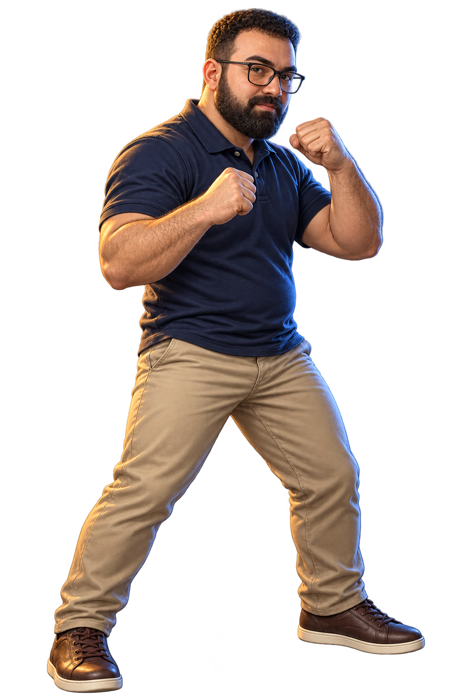
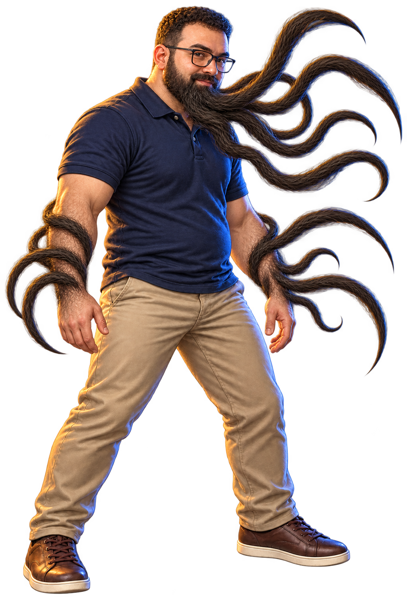

<!doctype html><html lang="en"><meta charset="utf-8"><meta name="viewport" content="width=device-width,initial-scale=1"><title>Bozo — Hair portrait concept</title><style>body{background:#10161c;color:#eee7dc;font:16px Arial;margin:30px}main{max-width:1100px;margin:auto}h1{margin-bottom:8px}p{color:#b1bec6}section{display:grid;grid-template-columns:1fr 1fr;gap:24px}figure{margin:0;background:#18212a;padding:18px}img{width:100%;height:70vh;object-fit:contain}figcaption{padding:12px;color:#efb080}@media(max-width:600px){section{grid-template-columns:1fr}img{height:65vh}}a{color:#efb080}</style><main><h1>BOZO / HAIR READY TO STRIKE</h1><p>Approved concept, now applied to both skins in the game.</p><section><figure><figcaption>CURRENT</figcaption></figure><figure><figcaption>NEW CONCEPT</figcaption></figure></section><p><a href="prompt.txt">Generation prompt</a></p></main></html>